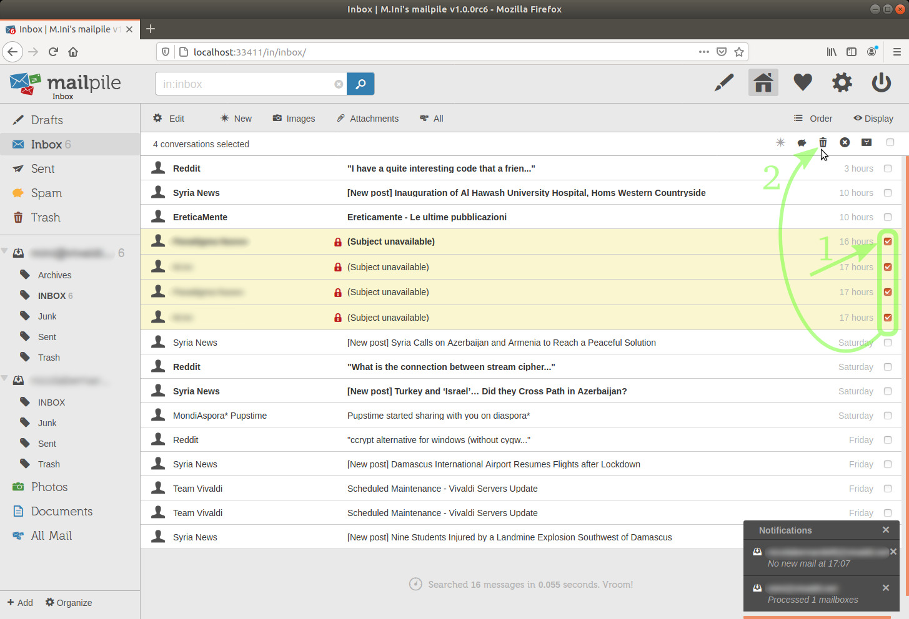
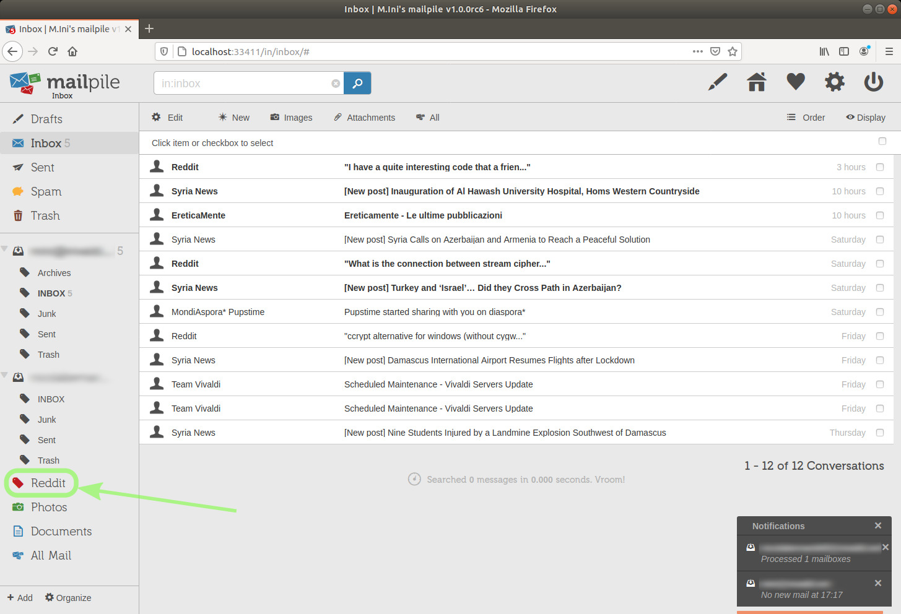
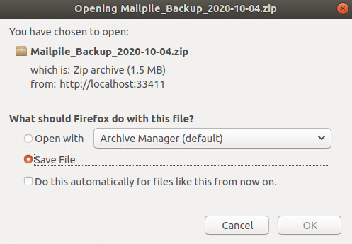

Ver. 2021-03-14 19:15:40 UTC (first preview release: 2020-10-06) – Based on Mailpile 1.0.0rc6
GitHub repository: https://github.com/greenpark-code/Mailpile_tutorial
Community: https://community.mailpile.is/t/mailpile-tutorial-for-newcomers/597
This tutorial comes with no warranties whatsoever, I'm not a Mailpile expert nor a certified security expert, I've quoted Wikipedia on a few important points and I'm discussing what my own approach is, also mentioning why certain aspects of it actually constitute one of various possible bets about possible attacks.
If reading this document you realize that you can't evaluate this information enough to be able to conclude that it promotes awareness of possible security problems, then you should probably do some research on your own and/or find a knowledgeable person that you can trust.
This tutorial isn't in any way proceeding from the team of Mailpile developers, it's only my best effort to share hopefully useful information while encouraging more persons to use this powerful email client. All evaluations and opinions expressed here are solely mine.
NOT BEING ONE OF THE DEVELOPERS AND NOT HAVING CONTACT WITH THEM, I MIGHT AS WELL BE IGNORING USEFUL INFORMATION OR EVEN GETTING SOMETHING WRONG.
I can not guarantee that I'll be always in condition to update this tutorial in the future, but you can always fork it and improve it.
In a nonessential section below, I mention an optional device to hold keys, to hopefully raise the security level against keys theft. I'm not getting any compensation whatsoever from the maker. Again: I'm just sharing possibly useful info. That device happens to be the one I bought, I can't say anything about any others.
If you want to jump hands-on on Mailpile, at least don't miss:
Why Mailpile is so extremely interesting and what should be kept in mind while starting to use it.
Mailpile is a wonderful email client available for Linux, MacOS and Windows.
I've been using Thunderbird+Enigmail during years by now, but Mailpile has winning features.
One of its most innovative and important characteristics is that it can very quickly search through encrypted emails without having to decrypt them. This breakthrough was implemented by mean of a search index.[1]
Mailpile enables you to easily send and receive encrypted emails (believe it or not, despite all the info and caveats reported here LOL).
It keeps your settings and email messages encrypted in your local storage, optionally also the messages you received unencrypted. You don't need to keep your signatures in separate unencrypted files, easy to read for any intruder.[2]
Mailpile interacts with the servers of your email service providers, copying emails and folders to your local storage.
Optionally, Mailpile removes your emails from the remote servers, not by default (although that would be the philosophy that the project leader recommends to embrace, keep your emails on your computer[3]).
I still need to find clarifications on a few things, I'll mark them with this color and add "[needs clarification]".
Disabling "Leave mail on server" in the email accounts settings[4], my emails are actually disappearing from the remote Inbox folders, although not always at once. I'll see if I can find a way through the GUI or the CLI to:
I can do both things connecting in webmail with a browser (I use Firefox and Vivaldi) or with Thunderbird. [needs clarification]
I understand that the developers had to respect priorities during this certainly huge amount of work, and that not all functionalities are already accessible through the Graphical User Interface (or GUI), nor a full documentation is available. But it's evident that the development has been done with high quality in mind. Just to mention one point: the search engine performance is astonishing.Here's the GitHub page for Mailpile issues. I've read a bunch of them, I think that it is possible that some of the issues which appear to be still open have been resolved through other fixes by now. The current development status looks better hands on than on that page.
Again, I'm using version 1.0.0rc6, which means the 6th candidate to become release 1.0.0.
search command in the CLI, see below.NOTICE: if you send an email to yourself from Mailpile itself, Mailpile won't show it in the Inbox, you'll only see it among Sent emails, despite the fact that by default Mailpile sends a copy to your account.
(To yourself meaning: using Mailpile to send from one to another of the email accounts you have configured in Mailpile, or to the same one from which you are sending.
You will see that email in Mailpile's Inbox if you have sent it from another client, e.g. Thunderbird, even if sent from one of the email addresses that you have also configured in Mailpile.)
This can be confusing at first, but it actually makes it easier to handle your emails both in webmail and with Mailpile, while avoiding to see duplicates of all emails you send, despite having a copy on remote servers.
(You can choose at any moment not to send a copy to yourself, and not to leave emails on remote servers.)
JackDca kindly shared in-depth knowledge, it does not happen with any ISP:
Regarding send(ing) an email to yourself from Mailpile, the behaviour depends on the ISP that you are using. Mailpile uses the Message-ID in the email metadata. Emails that have the same Message-ID are treated as duplicates and are not shown.
Some ISPs replace the Mailpile-generated Message-ID of an outgoing email with their own, with the result that the received email will be shown in the Inbox.
Other ISPs retain the Message-ID assigned by Mailpile so that the received email is ignored as a duplicate.
It's possibly good practice not to do anything else while Mailpile is permanently deleting emails. (Today I launched the delete command in the CLIto immediately delete various emails from my huge GMail setup, which was probably going to take a few seconds on this old computer, with fully encrypted index. So, after launching the delete command, I immediately started doing something else via Mailpile's the GUI. The GUI worked fine but I got a message in the CLI that the delete operation had failed. I launched it again without doing anything else and it went through just fine.)
I might be adding a few items in the future, but for now this is quite a short list.
Mailpile can create and manage encryption keys for you, if you prefer, or it can use your own pre-existent keys.
You can choose whether or not to let Mailpile memorize your keys passphrase, both for keys created by Mailpile and pre-existent keys.
Would it be more secure to type in the keys passphrase when Mailpile requires it once in a while?
That's quite a bet, I don't know if there are more chances that my keystrokes can be recorded at some point or that the encryption with which Mailpile saves my settings gets compromised (or even that a side channel attack grabs my secret keys anyway).[11]
The possibility to use a hardware device to hold your secret keys is mentioned below in this document.
Mailpile's GUI enables you to classify selected messages by a simple mouse-button click. Tags can work in two ways:
Tags can also be nested one inside another. It is an extremely flexible tool to keep your messages organized.
From the CLI, it is also possible to tag and untag emails.
CLI + tags = a powerful mean to classify or trash or immediately delete huge amounts of emails.
The GUI is beautifully designed, keeping functionality in mind. One of Mailpile creators is a real designer.[12]
The installation procedure was very quick and easy on Ubuntu Linux 18.04[13], following the instructions on their website to add their repository.[14]
Mailpile can handle multiple email accounts, I'm not losing this important feature switching from Thunderbird.
If you are not already used to having multiple email accounts in the same client at once, you might end up answering from one account an email you had received into another account.
Again: I am using Mailpile 1.0.0rc6, which means the 6th candidate to become release 1.0.0.
Here is a basic post installation startup tutorial.
When I started this tutorial, I would have liked to have more emails to test on already, but with Thunderbird I used to remove emails from remote servers. I enthusiastically wanted to make this tutorial anyway, because I know quite a few different groups of persons who would be glad to use Mailpile, for instance a few journalists, and a friend in a humanitarian non-profit organization that was needing something exactly like Mailpile, to make a transition towards better protection of their supporters' privacy and financial data, while staying compatible with their pre-existent email services and being able to search through encrypted emails.
On Linux, I start Mailpile from the terminal window:
image 1
By default, Mailpile launches my web browser to be used as the Graphical User Interface.[16]
The fact that our web browser is used as the GUI empowers us to have various tabs open and connected to Mailpile at the same time, in order to keep going with various tasks. For instance, I could be preparing an email while searching in others or checking if any new incoming emails need an urgent replay.
Notice the URL: localhost:33411
"localhost" means that the web browser itself is connected to Mailpile which is running locally on my own machine, this browser tab does not connect directly to a remote server.
Mailpile in turn is connecting to the remote servers of my email service providers, if possible, or it is enabling me to work on my emails in local storage, while staying offline.
image 2
In the terminal window, you'll see that Mailpile also has a Command Line Interface (or just CLI).[17]
This is the command I've used to tell Mailpile "please send now the emails which already are in the Outbox", when I was too impatient to wait during at most 90 seconds, which is the default interval for Mailpile to check if there are any emails in the Outbox:[18]
sendmail<enter>
I can also access the Command Line Interface via the GUI, clicking the Settings and Tools gear icon in the upper right corner and then the <> CLI button. I prefer the terminal window, which gives me more lines visible at the same time. Both ways, however, I can scroll up to see previous output.
This document includes a section showing how to search and export emails or search and delete emails with the Command Line Interface.
image 3

Now let's go back to the GUI.
I'll choose my preferred language and click the Begin button.
image 4
I'm asked to type a password. Afterwards, the same password will be necessary to unlock the whole setup with my settings and emails.
It can actually be a passphrase made of various words separated by spaces. Mailpile itself suggests a sequence of words, I prefer to create my own sequence some of which modified from any vocabulary (avoiding obvious substitutions which would be part of hackers' dictionaries anyway), including uppercase and lowercase letters, numbers and special characters. After checking that no smartphone cameras or webcams are around, I write it down on paper first (no cameras around) and type it in afterwards, and keep the paper somewhere safe during the first few days. (The same when I change it.)
But you might have other methods.
Just don't lose or forget it!
image 5
image 6
After typing in the same password twice, I'm going to click the Set Mailpile Password button.
And I'm ready to go.
image 7
image 8

On my first login, I am guided through the few easy basic setup steps.
image 9
image 10
I scroll down...
image 11
My personal choice here is to change the above defaults as in the next picture, BUT you should read this note before deciding.
image 12
(Later, I've created a separate Mailpile setup with my GMail accounts (which I'd like to progressively abandon). Mailpile fetched some years of emails. My PC is not too slow for these settings, even with over 46k emails exceeding 14 GB.)
And I'll click the Save Settings button.
image 13
image 14
I'll type in the name I want to be displayed with this email address and the email address itself.
image 15
And I'll click the Next button.
image 16
If anything more complicated than "normal"[19] unencrypted emails means no encryption at all for you, then let's choose the easiest way for now, any level of security on your emails is better than none.
Mailpile, just as Thunderbird+Enigmail, can work in combination with GNU Privacy Guard to use all keys in its "keyring" (or "keychain").
We can let Mailpile handle gpg to create keys for us and totally manage them, or we can use gpg from a terminal window to create keys, import keys, export keys, and also encrypt symmetrically or asymmetrically, sign files, sign other persons' keys...
(I didn't plan to put any GnuPG commands in this document, because there are many good tutorials out there, but after mentioning Mailpile in an online<=>air-gapped workflow, I ended up doing so in an appendix.)
Mailpile will be able to use any keys that we might import directly with gpg into its keyring.
Please NOTE that one of the Security and Privacy settings I modified above was Use shared GnuPG keychain for PGP encryption keys and I activated it.
I haven't tested at all what happens with "Off", what follows is pure speculation and that setting might even have another meaning. [needs clarification]
If you do not want to have anything to do directly with GnuPG, you might want to leave that "Off", I don't know if doing so would imply a higher security level. [needs clarification]
I prefer to be able to fully use Mailpile in combination with gpg on the command line.
Besides, in the GitHub page for Mailpile issues, I've seen reports about difficulties to import keys via Mailpile's GUI, while it's trivial to import keys with GnuPG's command line:
gpg --import filename
(Those issues may have been solved by now. [needs clarification])
As for the security level: I prefer to create my own keys apart with GnuPG, I set a stronger passphrase on my keys than Mailpile's current passphrases, alphanumeric instead of numeric-only, and I keep the primary secret key stored apart, I only export secret subkeys and import them into the keychain I actually use. This way, the primary secret key remains valid as a long-term identity key, I can always revoke the secret subkeys, periodically or if I think that they might be compromised, and create new ones.
Unless you really prepare the whole Mailpile+GnuPG setup on some air-gapped machine, this approach might actually turn out to be weaker than leaving it all to Mailpile, because at some point you would have to type the keys passphrase, at least twice, once when importing into the keyring, and once for Mailpile, and you don't know if those keystrokes are being recorded... This is about bets, make yours. If there isn't an option to prepare the whole Mailpile+GnuPG setup on some air-gapped machine (at least for creating keys and moving secret subkeys to a hardware device), then leaving it all to Mailpile might be the best bet after all.
On the other hand, you'll be typing Mailpile's login password anyway, so the encryption on your local storage might also get compromised... well if somebody's "watching over your shoulder", then simply nothing can be kept secure on that machine, unencrypted or decrypted messages will be exposed as well.
Better chances of security would be gained by also encrypting/decrypting exclusively on an air-gapped machine, better if with a supposedly audited Operative System like Tails, especially at the moment of keys generation, to avoid Kleptography.
As for purely brutal force attacks on the local storage encryption, they wouldn't probably be successful for a few more years.
I don't know at the moment what type of encryption it is. [needs clarification]
The current PGP key of Mailpile's developers team is EdDSA, a type of ECC, so maybe the local encryption scheme is also based on ECC. I've quoted something below about that.
Anyways:
If you do leave it all to Mailpile, you probably have one more good reason to always keep an updated backup copy of the whole Mailpile folder (not only Mailpile's settings backed up via the Backup button), and also a backup copy of the Mailpile package that you have installed and has been running fine.
Keeping a backup is a good practice anyway, Borg is a very good de-duplicating incremental backup utility, I hear from a very knowledgeable friend that Duplicata is another good one... or you might just copy the whole folder (in Linux: ~/.local/share/Mailpile).
If a frequent backup of the whole Mailpile folder is really not an option for you for who knows what reason:
Unless your philosophy is to "read and destroy" received encrypted emails, you should see if you can backup your secret keys anyway – and not only their passphrase[20] – so you'd still be able to decrypt new incoming messages in case you run into problems with Mailpile. I won't investigate for now how to do that in case that option is left "off". [needs clarification]
I describe below how I handled secret keys for a Yubikey 5 NFC.
Keys can be of different types. Compatibility with Autocrypt mentioned below is "as far as I've read", it could be outdated info (but a few tests are enough to understand that it is a secondary importance matter):
Please share if you have more information to evaluate for this choice.
I may choose RSA4096 as the basic key type associated with an account, considering – and despite – what follows, and considering the recommendations I've found in various tutorials about creating GnuPG keys, one is mentioned in the appendix with examples of usage of GnuPG in a Linux terminal command line.
After reading below about Kleptography, you'll wonder, as I do:
Let's see what Glenn Greenwald uses[23], I guess he learned from Edward Snowden:[24]
pub rsa4096/0xA4A928C769CD6E44 2015-01-06 [SCA] [expires: 2021-01-19]
734A3680A438DD45AF6F5B99A4A928C769CD6E44
uid [ unknown] Glenn Greenwald <Glenn.Greenwald@theintercept.com>
uid [ unknown] Glenn Greenwald <Glenn.Greenwald@riseup.net>
uid [ unknown] Glenn Greenwald <GlennGreenwald@firstlook.org>
uid [ unknown] Glenn Greenwald <Glenn.Greenwald@firstlook.org>
sub rsa4096/0x30B33AC842F37B85 2015-01-06 [E] [expires: 2021-03-05]That's one point for RSA4096.
And another one: Mailpile developers themselves qualify as "strong" the RSA4096 key type in that pull-down menu, meaning that they don't have elements against RSA4096 either (and they seem to know what they are doing, Mailpile can actually use or not use the pre-installed gpg-agent and gpg binary).
Now one point less for EdDSA:
This page tells us that EdDSA is based on elliptic-curve cryptography:
EdDSA – https://en.wikipedia.org/wiki/EdDSA
Such encryption, with shorter keys, might be as hard to break as RSA encryption with larger keys... except for quantum computing attacks.
Let's quote from this other page (please visit the page to also read those footnotes):
Elliptic-curve cryptography – https://en.wikipedia.org/wiki/Elliptic_curve_cryptography
Quantum computing attacks
Shor's algorithm can be used to break elliptic curve cryptography by computing discrete logarithms on a hypothetical quantum computer. The latest quantum resource estimates for breaking a curve with a 256-bit modulus (128-bit security level) are 2330 qubits and 126 billion Toffoli gates.
[43]In comparison, using Shor's algorithm to break the RSA algorithm requires 4098 qubits and 5.2 trillion Toffoli gates for a 2048-bit RSA key, suggesting that ECC is an easier target for quantum computers than RSA. All of these figures vastly exceed any quantum computer that has ever been built, and estimates place the creation of such computers as a decade or more away.[citation needed]Supersingular Isogeny Diffie–Hellman Key Exchange provides a post-quantum secure form of elliptic curve cryptography by using isogenies to implement Diffie–Hellman key exchanges. This key exchange uses much of the same field arithmetic as existing elliptic curve cryptography and requires computational and transmission overhead similar to many currently used public key systems.
[44]In August 2015, the NSA announced that it planned to transition "in the not distant future" to a new cipher suite that is resistant to quantum attacks. "Unfortunately, the growth of elliptic curve use has bumped up against the fact of continued progress in the research on quantum computing, necessitating a re-evaluation of our cryptographic strategy."
Whatever setup we have chosen now, if in the future we need a higher security level on some emails we can superpose one or more encryption steps.
we create apart another key (primary + subkeys), our correspondent does the same
"apart" meaning possibly on Tails (see Kleptography below), because GnuPG on Tails should undergo stricter auditing than for instance on Ubuntu and Windows[25], it could be an air-gapped computer or the keys could stay on a hardware device
we paste the result of the encryption into our email body or attach it (in which case better avoid the --armor option not to unnecessarily inflate size), so our message will be encrypted twice with two different keys (or more than two).
This is not difficult at all, at least on any Linux-based machine (I can only guess that gpg takes the same command line syntax in Windows). Just check out the appendix on GnuPG, especially this part.
The "encrypt apart and attach or copy&paste" modus operandi opens the possibility to use GnuPG to add secrecy to other communication channels instead of e-mail, e.g. Threema via web.threema.ch or Signal via its desktop app (without forgetting that our smartphones are probably the least secure devices around), or maybe Element, which is mentioned in this interesting page on privacytools.io. Without forgetting that GnuPG doesn't support forward secrecy.
After plainly stealing my secret keys from storage space, the attacker should crack its encryption. I'm setting strong passphrases, but today's computers are increasingly fast (and keystrokes could be monitored/recorded).
DISCLAIMER: I'm not getting any compensation whatsoever from Yubico (alas LOL), I'm just sharing possibly useful info. This device happens to be the one I bought, I can't say anything about any others.
CAVEAT: Keeping secret subkeys on a hardware device is probably pretty good against keys theft and should grant that what's signed with your signing subkey is actually signed by you.
As for secrecy:
So, again, I'm afraid that this is about odds and bets and actually guessing.
And again: letting Mailpile manage your secret keys might also be a good bet after all, or not using a hardware device to keep your keys (lacking certainties, I'm offering a honest analisys, so you can at least evaluate what this is about).
To prevent keys theft, an increased level of security would be a hardware device holding the secret subkeys, hoping that the device has no back doors.
Using a hardware device wouldn't necessarily prevent a side channel attack... or it possibly would on older PCs, provided they're not phisically exposed to anybody else but the owner.
Personally, after reading plenty of articles and posts in forums about discoveries of vulnerabilities apparently built in on purpose, I tend to think that the most recent is the hardware you buy from certain brands the most likely it is to come prepared with all sort of tricks to steal your data.
On a Yubikey 5 NFC (or Yubikey 5 Nano) you'd have to type in the device PIN[26] only once in a while[27] and touch its sensor button (or touch sensitive part) for any single operation required from it. Disabling this request would decrease the level of security against remote hackers, who might possibly be able to decrypt, encrypt or sign something with your secret subkeys, but still, they wouldn't be able to steal them.
I've given a try at this Yubikey 5 NFC with Mailpile and it works fine (actually Mailpile works with GnuPG which in turns handles the Yubikey nicely).
Unfortunately the device can only hold one PGP credential.[28] If you need separate email accounts, you'll have to choose one and keep your other secrets in the gpg keyring as usual. If you don't care if the same GnuPG keys are used with various email accounts/addresses, then plenty of tutorials out there will tell you how to use GnuPG on the command line to add more than one user id to the same key (basically gpg --edit-key <keyID> then adduid then save).
Or you can use the key you store on the hardware device as described above, as an additional encryption level, pasting/attaching to an email which is also going to be encrypted with the key associated to that account.
(A higher security level would be encrypting and decrypting on an air-gapped machine with keys which secret part never leave that machine, they'd only be stored in the encrypted USB flash drive from which you exclusively boot that machine, and possibly in its backup copy also "touching" only the air-gapped machine.)
Here you have a couple of tutorials I read for this Yubikey 5 NFC:
A summary of the workflow I followed:
Then I only exported the secret subkeys (not the primary key) with something like this:
gpg -o SECRET_SUBKEYS --export-secret-subkeys my_email@addr.essStill on the offline machine, I imported them into another keyring (probably an unnecessary precaution), something like this:
cd
mv -i .gnupg .gnupg_before
install -d -m 700 .gnupg
gpg -k
gpg --import SECRET_SUBKEYSgpg -o PUBLIC_KEY --export my_email@addr.essgpg --import PUBLIC_KEYAfter finishing it all, back to the offline machine:
cd
srm -rf .gnupg
mv -i .gnupg_before .gnupgIf using the Yubikey Manager[30] is a problem on the offline machine, you can leave the last steps for the destination machine before going back online, but with the offline machine you'll have already set up on your Yubikey three strong PINs (or passphrases) after writing them down on paper (no cameras around), one for normal operations, one as admin, one to reset it and unblock it after submitting a mistyped PIN three times. (On the online machine, I'd uninstall the Yubikey Manager, just not to leave it there ready and tempting any intruding hackers to spend additional time messing around.)
It looks more complicated than it is (of course it requires attention).
Am I being too paranoid? I was believing so, before coming to know what's mentioned below about "air-gapped" (especially this part of this footnote), and before what happened days ago, two different "weird" facts in the same day:
Hours after a successful operation, I found the Yubikey's PIN blocked, supposedly meaning that 3 attempts with a wrong PIN had been made (but of course I hadn't omitted setting up different PINs/passphrases than the default ones).
In such cases, here is how to unblock the device normal operations PIN (that's what I did with this Yubikey).
EACH ONE OF THE FOLLOWING COMMAND LINES HAS TO BE TERMINATED WITH THE <ENTER> KEY.
gpg --edir-card
admin
helpchoose the menu item which enables you to unblock the normal PIN using the reset one, with this GnuPG version (2.2.4):
unblockto exit:
quitNow, I'm keeping the device plugged into a HUB with real mechanical switches to cut power to any of its USB slots. The idea is to leave that switch off unless necessary. Apparently, the device works just fine also via the HUB, I've tested signing some 1.9 GB files and it worked flawlessly. If you do that, before you try to use the Yubikey, be sure that its USB slot is switched ON.[31]
The same day, I couldn't eject an USB flash drive, Linux kept warning that the device was busy while I was closing anything else. Finally, it turned out that I could unmount it with no warnings only after closing the last thing I would have deemed responsible, the Firefox browser instance I had been using to surf the web, despite the fact that I hadn't accessed that USB flash drive at all from Firefox and despite having launched Firefox inside firejail (I'll have to review the apparmor and firejail profiles).
Apparently, you are never too paranoid. And BTW:
I use a separate Firefox instance to connect to Mailpile, I do not surf the web and connect locally to Mailpile with the same Firefox instance. The one-line bash script I use to launch Firefox:
firefox -ProfileManager -no-remote -new-instance "$@"If you are running out of RAM space, you might possibly save a bit of it by omitting the -no-remote option, with decreased security level though.
Supposedly more secure:
firejail firefox -ProfileManager -no-remote -new-instance "$@"Or you could use a browser, e.g. Vivaldi, to surf the web and another, e.g. Firefox, to connect to Mailpile on your computer, or the other way around.
I've also tested not keeping in the GnuPG keyring the keys for the accounts I've configured in Mailpile until necessary. Luckily, Mailpile does not complain about a symlinked ~/.gnupg folder (GnuPG detects keyring changes and asks for your passphrases again).
My conclusion for now, for this trick not to have Mailpile complain and possibly create new keys if you pass through the settings of an account (even if only servers related settings):
When Mailpile is running, keep in the keyring at least the public keys of the accounts you have configured in Mailpile.
Before modifying an account settings – and obviously before doing anything requiring signing, encrypting, decrypting – make the secret keys available.[32]
Remember: apart the chance that the encryption scheme itself gets compromised in the future, or your keys get stolen and their passphrase cracked, there's also the chance that your computer itself might be compromised, with somebody watching "over your shoulder", no matter how secure your login and keys passphrases are.
Of course it also depends on the level of security you need. Protecting from common criminals is not the same as being a journalist whose sources are up against 9-11'ers.
But at least slowing down possible bad guys in general is an important step that worldwide citizens should all take.
You might also need to warn someone, e.g. police forces somewhere in the world, that by analyzing certain news it seems possible that something bad might happen, and you would not want to risk giving out that idea to the bad guys in case it turns out that they hadn't actually thought about it. But it doesn't look like police forces in general, as well as journalists in general, are nowadays "encryption aware" (not that mainstream journalists are up against the "biggest" bad guys around, anyways, it looks more like the opposite... but I was thinking about real journalists).
Staying offline while decrypting and reading a message doesn't guarantee that it will remain secure once you get back online, even if you have securely deleted the unencrypted message. The same consideration is valid for any password you type on your computer, even if used locally.
Edward Snowden was asking Glen Greenwald to only decrypt/encrypt on an air-gapped machine certain messages.
That could be for instance:
Why the last point? Quote from How to Build a Raspberry Pi FM Transmitter – Circuit Digest:
Every microprocessor will have a synchronous digital system associated with it which is used to reduce the electromagnetic interference. This EMI suppression is done by a signal called Spread-spectrum clock signal or SSCS for short. The frequency of this signal can vary from 1MHz to 250MHz which luckily for us falls within the FM band. So by writing a code to perform frequency modulation using the spread-spectrum clock signal we can tweak the Pi to work as a FM transmitter.
If it can transmit radio frequency in a controlled manner, it can transmit data as well (with FM modulation or not).
When it comes to hardware, I tend to think:
Closing any sensitive piece of paper before opening any cameras around is a necessary precaution, also for any not air-gapped setup.
ATTENTION: encrypting/decrypting staying air-gapped might not prevent certain tricks, for instance:
Radio communications: see just above here and again this previously inserted footnote.
Kleptography: for instance not a truly random or pseudo-random generator at the moment of the creation of your keys.
The NSA was accused to have pushed a tricky algorithm as a commercial standard.
[...] In 2013, The New York Times reported that documents in their possession but never released to the public "appear to confirm" that the backdoor was real, and had been deliberately inserted by the NSA as part of its Bullrun decryption program. In December 2013, a Reuters news article alleged that in 2004, before NIST standardized Dual_EC_DRBG, NSA paid RSA Security $10 million in a secret deal to use Dual_EC_DRBG as the default in the RSA BSAFE cryptography library, which resulted in RSA Security becoming the most important distributor of the insecure algorithm. [...]
This is why I've written "I may choose", "I'd still choose...", of course I feel uncomfortable when opting for RSA4096 after reading this.
I'd be willing to at least hope that these algorithms are somewhat audited by knowledgeable persons worldwide, which is probably why they got caught... although years later, but the truth is:
For important messages, we might want to superpose encryption levels made with keys of different types.
Are "RSA Security" really the guys who created the RSA standards used by GnuPG?
RSA Security – Wikipedia
[...] RSA is known for allegedly incorporating backdoors developed by the NSA in its products. [...]
Yes, it's definitely them.
Well, if I were a lawyer, I'd probably think that opting for RSA4096 as the basic key associated to an account, in case of any backdoors at least they wouldn't exploit my customer's messages legally, because that would make public the existence of a backdoor.
Also, I don't know if there wouldn't be any backdoors with EdDSA or any other standard.
To be fair, however, I think these algorithms and their implementation is open to auditing by anyone having the time and knowledge to do it... and GnuPG binaries can be downloaded with signatures (it seems to be kind of circular, using GnuPG to verify GnuPG pre-compiled binaries, but you might use an audited version to verify the signature on the new one, at least you know that it is what the developers published).
Moving data air-gapped <=> not air-gapped is a PITA of course, given that USB is a big no no.[34] The smaller the data file is, the faster it is to pass it screen-to-cam fragmented in QRcodes (I've made myself a couple of scripts which do that, TX/RX screen-to-cam). More than a few tens of kBytes => it's probably faster to burn a rewritable CD or DVD.
You might check out the appendix with examples of GnuPG usage in a Linux terminal window.
It's easy to add to a Mailpile message some data encrypted apart, you can simply attach the encrypted file to your email.
If your encryption result is in ASCII format, you can also paste it into the email body, but in case it is a long message, the extraction of your encrypted data to be decrypted offline might not be straightforward, depending on your correspondent's skill level and email client.
Mailpile is perfectly suitable for the "extraction" of a message that you might need to decrypt apart possibly after having moved it to another machine.
Its Command Line Interface enables to export more than one message at a time, you might want to check out the specific section of this document about that.
The GUI enables to easily save a message body or the whole message format.
You can save the message body to your browser downloads folder, after activating Display HTML formatted message content:
image 16b
(About the picture: a few days have passed since I took the other snapshots in this tutorial, I've received a few more emails and I might have added a couple of tags.)
Or if you need the email source code with its entire format, you can hover the mouse cursor as in the following picture to reveal more functionalities:
Clicking that small hammer icon, which mouse hover hint says Display message source code, will open a new tab in your browser, with the whole message as received.
You can then save that tab content to a file (ctrl-s with Firefox in English).
As I've chosen for this tutorial to let Mailpile create and manage my keys, I won't have to type the keys passphrase (and/or touch any sensor button on a hardware device).
I'm ready to type this email account password, the password I normally type in when accessing my emails in this account.
By default, Mailpile temporarily remembers this password, so I won't have to type it in again during this session.
The drop-down menu (call it listbox if you prefer) where you can read "Unlock Account" enables me to choose other behaviors. I could prefer to let Mailpile permanently remember my password for that account (and possibly in the future easily tell it to forget it, Incoming Mail settings | Forget password.
image 17
I'll type in my password, I'll leave the default behavior "Unlock Account" and I'll press the button.
I get to the following screen, where the + Add Account link enables me to add as many accounts as I need.
Here I have already added a second account.
Basically, for each account, I had to:
With Vivaldi (vivaldi.net), I didn't have to modify any settings from what Mailpile had been suggested by Vivaldi's autoconfig server.
See below for Google Mail.
image 18
The four icons below the small gear labeled Settings allow me to access the account settings.
I don't need to modify anything now, as the default settings and the ones guessed by Mailpile are just fine for me. I can omit pictures, so this tutorial won't appear unnecessarily (even more) long and scary.
IMPORTANT NOTICE: these are actually sections of the same "dialogue".
When you press the Save button, you are saving the settings in all sections.
If you are modifying the servers settings but Mailpile doesn't find your secret keys (e.g. because you activated another .gnupg folder and forgot to restore the previous one), then you will also be confirming what's in the other sections of the dialogue, and for "Security and Privacy" you'll be choosing the default behavior in absence of keys, which is, at present, the creation of new EdDSA keys for the account.
Beware that afterwards you might be sending e-mails signed with this new secret key and you might be attaching a new public key, instead of using the pair you had previously associated with this account.
When you need to leave "dialogue" windows of this kind without modifying anything, you can click the x in the upper right corner (you have already seen the "Create a new Account" and "Password Required" dialogues).
Notice, in the lower right corner of the above picture, that I mistyped the password of one of the two email accounts I've added.
In fact, in the sidebar on the left I have the copy of the remote folders structure of one account only.
No problem, by clicking the please login link under the notification I will be able to type the password again.
We'll see below how to change the order of the elements appearing in the sidebar.
After typing in the correct password:
image 19
[needs clarification]
It's unclear to me at the moment if there is already a way through Mailpile's GUI to do the following operations, which are intuitive in Thunderbird:
| desired action | how-to in Thunderbird (being online) |
| check what's actually in the remote folders at the moment | left-button click the remote folder |
| immediately remove emails from remote folders | drag emails from remote to local folders, or select emails then shift-del |
| "compact" remote folders | right-button click and choose "Compact" from the contextual menu (same as for local folders) |
I can do those things connecting to the account with my web browser in webmail, or with Thunderbird. Actually, I'm doing that progressively less frequently, because I'm seeing that Mailpile is also working fine when configured not to leave emails on servers.
I'm going to click the Inbox link in the upper part of the sidebar, just below Drafts.
(I'm adding this section days later.)
At first, I let Mailpile detect all settings, and I was required to authenticate in a pop-up window, but after doing so I got a window from Google saying that I couldn't sign in with this app.
The solution is to generate an "App password".
That's all, a password was then visualized ready for me to type or copy and paste in Mailpile.
At once, the structure of my remote folders in that account appeared and Mailpile was fetching my emails.
Despite having now downloaded almost 17 years of emails (over 46k emails exceeding 14GB) and despite having chosen full index encryption, Mailpile is still very fast searching, a wonderful client undoubtedly.[35]
However, this note mentions what is possibly slower because of having opted for full search index encryption.
Now, back to my Mailpile setup for this tutorial.
Here's my local Inbox.
I have four lines saying "(Subject not available)".
This is because I don't have the keys with which those messages were sent.[36]
Let's move those emails to the trash.
image 20

Simply:
This is common practice in the interface of various webmail services.
The following tasks are all very easy in Mailpile:
You'd better understand the instructions after reading other parts of this tutorial, but you can jump directly there now if you need to.
image 21
After sending those messages to the Trash, we want to better organize our emails.
As mentioned above in this tutorial, Mailpile allows to classify messages with tags.
Each tag can work either as a category (like a folder) or an attribute (cross-folders, possibly assigned to emails of different categories).
TIP: To create a new tag, we click the + Add link in the lower left corner.
In the first section of the tag settings, we can type in the tag name, change its color by clicking on Color, and by clicking the tag icon at its left we can also assign an icon to our new tag.
image 22
I'll leave to you the pleasure to discover all the icons, their design is very nice, actually I wish there were more icons.[37]
We'll see below in this doc how to use attributes and nested tags.
I'll type Reddit as the tag name and choose the red color for it. I'll leave the other settings in this section as per defaults:
image 23
Let's click Technical Settings to reveal that section.
I'm leaving None as the Parent tag because I don't want this tag to be nested within another.
I'm leaving Behave as category so it will work like a folder (we'll use attributes later).
I'm selecting Display in toolbar
This might become a default, I believe. At the moment, I don't see how I would be able to tag emails from the GUI without having my tags in the upper toolbar. [needs clarification]
Anyways, it's easy to do it from the CLI, there's a section about the CLI below which also shows how to tag and untag emails.
image 24
And I'm ready to click the + Add button.
Here's my newly created tag, in the sidebar on the left.
image 25

To move emails to a tag:
image 26
I'm going to do it now and move that email to the Reddit tag.
TIP: had I already created various tags, at this point I might make a mistake and move the email to the wrong tag, thus "losing sight" of that email. In that case, I could either:
search interesting code<enter>or
click the All Mail link just above the lower left corner and look there for the message.
The All Mail link will show us all messages of all accounts regardless what categories we moved them to or attributes we associated them to.
Done. As it was an unread message, we now see "1" aside the Reddit tag.
TIP: Numbers aside an email account or tag are telling us how many unread messages are contained there.
TIP: lines of unread messages appear in bold.
image 27
I'll click the tag in the sidebar on the left to see its content.
image 28
The message is there, as expected. It is in bold, meaning it's actually still an unread message.
I'm clicking Inbox almost at the top of the sidebar to go back to the local inbox.
I want to create new tags for the remaining messages, I'll click the + Add link in the lower left corner.
image 29
Here you can see that I have created another tag, Syria, and I'm moving various messages to it.
image 30
TIP:
This doesn't seem to work with nested tags. [needs clarification]
We'll see later in this document how to edit tags settings.
Two unread messages are now in the tag Syria.
image 31
I notice that I have two more emails from Reddit left in the Inbox, I'll move them to the Reddit tag as well.
image 32

One of the two was an unread message, which added 1 to the counter of unread messages in the Reddit tag-category.
image 33
I'm going to click the Reddit tag in the sidebar to check its content:
image 34
Look in the above picture at the search engine input field after clicking on the tag in the sidebar, in this case we read "in:reddit".
What we see after the ':' character is the tag keyword ("all:mail" is an exception to this format).
We don't see it when creating a tag, it's automatically added by Mailpile according to the tag name, but we can see and modify it later by editing the tag settings, and actually we want to keep it matched to the tag name and change both accordingly, in case, so we don't get confused when searching in the CLI.
(We'll see later that we can use what we see in the search engine input field after clicking a tag to search with the CLI, e.g. search in:inbox<enter>. Then we can export emails, delete, tag or untag them...)
We have seen above how to modify the order of the elements in the sidebar.
TIP:
To edit the settings of a previously created tag:
If you change the tag name, you might want to also modify the keyword accordingly, you find it in the Technical Settings.
So you won't be confused by the results of your future search operations.
The keyword field is not visible at the moment of the tag creation, it's automatically created from the tag name.
Not all characters are valid for tag keywords, though [needs clarification], you'll realize by observing the keyword for the various tags you have created, at the right of "in:" in the search engine input field after you click each tag on the sidebar.
This document includes a section showing how to search and export emails or search and delete emails with the Command Line Interface.
And I'm already back to the inbox with another tag created (Ereticamente is a literary blog hosting various authors), moving a message to it:
image 35
And the following picture shows what's now left untagged in my local inbox, after also moving the message from Mondiaspora to the Diaspora tag.
If I want to exit from Mailpile, I can either:
Here's the first method, I can click the logout button, the one with the 0/1 icon by now "universally" meaning ON/OFF...
image 36
... then in the command line interface q and of course the <enter> key
image 37
If after Mailpile completes its shutdown the terminal prompt appears but not the blinking cursor, I can either:
reset and of course the <enter> keyimage 38
Here's the second method. We can go to the settings by clicking the gear icon near the upper right corner of the GUI...
image 39
... and while we are here, we can click the Backup button before leaving.
TIP: You should always click this Backup button after modifying your settings or creating new keys
You should also make a backup copy of your ~/.gnupg folder, or whatever folder you have symlinked as ~/.gnupg
'~' expands to '/home/username/' or '/root/', it's the user's home folder in Linux, I don't know where the Windows version of GnuPG keeps that folder.
(Also notice the Password button, enabling to change the Mailpile password.)
image 40
My web browser tells me that it has a file for me (just like when I download a file from a remote server, but here the file origin is local).
I choose to save it.
image 41

I'm going to check if the file is now in the ~/Downloads folder, which is where Firefox is configured to save files on my PC.[39]
image 42
The file is actually there.
Its contents are encrypted. However, you never know... I prefer to store it away.
TIP:
srm filename command in the terminal window (secure-delete is the name of the package including srm in Linux distributions derived Debian, like Ubuntu), or srm -f filename to have faster deletion and impose less work on the disk, or even shred -n 1 -u so that shred overwrites the file only once before deleting it (coreutils is the name of the package including shred in Debian derivatives).
NOTICE: I have restored my previous Mailpile setup.[40] And a few more days have passed.
We have already been using tags.
As promised at the end of that section, here are attributes.
A tag-attribute enables us to establish that multiple emails belonging to different categories have something in common, and to search for those emails at once.
One of Mailpile's icons is a star icon.
I could use it for an Important tag-attribute if I wanted to keep this aspect as in Thunderbird.
Then, clicking this tag in the sidebar, I'd see all the emails I've tagged as important, possibly belonging to various tags-categories.
I'm going to click the latter in the sidebar.
image 43
Those emails clearly belong to various tag-categories, or if you want, to various folders.
I think we can create as many tag-attributes as we need. [needs clarification]
However, if we need to see them in the tool bar in order to use them from the GUI, then there is a practical usability limit to the number of tags we can create, at least for now.
Using a greater number of tags from the CLI should never be a problem, though.
Let's open the tag settings dialogue by clicking the small gear icon or its label Edit, above on the left, below the search engine input field.
In the Technical Settings section of the tag configuration, you can see that Behave as attribute is selected.
image 44
I have now created two tags nested in the Reddit one.
(Actually, in this moment I am simulating that I have a use case for subtags.
In reality, each one of those emails contains notifications from various groups. I'll delete those subtags later.)
NOTICE: subtags can have a different color from their parent.
I chose the same on purpose.
I'm going to click each subtag in the sidebar, and then their parent.
image 45
(We see that some of the emails above have been tagged with the Interesting attribute, one has also the Important attribute.)
image 46
And here's the parent tag content, we see the emails contained in all its subtags:
image 47
For the emails above, inside the parent tag, the subtags icons now appear as if they were attributes.
However:Defining subtags as attributes is not necessary. Any parent tag will show the contents of all its nested tags.
(We might think of it as a special case of cross-folders search.)
Here, I have actually left them configured as categories.
Below, I'm also changing them to attributes.
Let's see the settings of one of the subtags:
image 48
image 49
I'm also showing you the Automation section, which I'm not using in this tutorial.
It should enable me to establish an action which would automatically take place a certain amount of days after tagging an email, choosing among:
Below is the default setup: disabled.
image 50
Here are a few ways to remove tags from emails:
image 51
After clicking the Interesting tag in the side bar, I see that its content now looks a bit different from before:
image 52
If I wanted to also see the parent tag here, I could have set the subtags as attributes instead of categories.
Here's the result (it's a matter of preferences, comparing the following with the previous picture, I prefer how it looked before, when these subtags where categories):
image 53
Let's see what the content of those subtags looks like now:
image 54
image 55
Again, I prefer how it looked when the subtag was a category.
I have clicked the Inbox link almost at the top of the sidebar and I see that I have no untagged messages.
Now I'd like to compose and send a message. I'm going to click the pen icon above towards the right.
In this case, in my Inbox completely empty, I could also click the Compose a message button.
image 56
Here's the compose message dialogue.
image 57
I've selected from which account I'm sending, I've typed in the recipient address and I've written something in the message body.
When hovering the mouse cursor on the recipient, a contextual menu appears.
image 58
Out of curiosity, I'll click the Show Encryption Keys link.
NOTICE: this is not a necessary step, I could click the Send button right away.
image 59
There is some ongoing activity...
... now finished.
image 60
I'll close this information window by clicking the x in its upper right corner, then I'll click the Save button to save the message as draft or the Send button to send it.
And this is all for now.
This tutorial is far from what I'd like it to be. Had I started out with more time available, I would have possibly ended up having less afterthoughts leading to much more time being put into it than reasonably available at the moment, and getting it out better.
But here it is.
In Mailpile's Command Line Interface (CLI), you can search for one or more words and then export or delete all the matching messages or some of them.
To get rid of previous output in the CLI:
EACH ONE OF THE FOLLOWING COMMAND LINES HAS TO BE TERMINATED WITH THE <ENTER> KEY.
Let's start by getting some help.
To get help about the CLI commands (easier to read in text format than json format), just type the help command:
helpIf the output format is not plain text but something else, you can switch to text:
output textShould you need your results in json or html format, you can switch like this:
output jsonoutput htmlDon't forget how to switch back to text:
output textSometimes, as an unwanted side effect of a search, my output got switched to json. Switching back to text and repeating the same search was consistently having the same unwanted side effect. I guess the issue has been reported. [needs clarification]
Sometimes, when that happened, after doing a search with zero matches (searching for a word I don't have in any emails), I could with no surprises launch the same search which had been triggering the unwanted output format change. Sometimes that didn't work, it was possibly a coincidence.Before executing an export command, you need to execute a search one.
To search:
search word another whatever
or:
s word another whatever
In case any emails match your search, they'll appear in lines preceded by numbers. To export them all into one text file:
export allNotice that e would be the shortcut for another command: Extract attachment(s) to file(s).
Here's what happens if I export the 2nd, 7th, 8th and 9th matching emails (the first line is my command):
export 2,7-9 <enter>
Elapsed: 0.208s (export: Exported 4 messages to mailpile-1602723517.mbx)
{
"created": "mailpile-1602723517.mbx",
"exported": 4
}I find the resulting text file in my home folder. Opening the file ~/mailpile-1602723517.mbx and searching for "Subject: " confirms that it contains all those emails, although in different order.
The help text mentions a few optional parameters to the export command that I haven't tried out yet.
To see all emails in the Reddit tag:
s in:reddit
Result:
Elapsed: 0.002s (search: search)
1 Reddit "A more complex take on the b (Important)22 hours
2 Reddit *"Hi, i tried to make a message with a one Monday
3 Reddit *"[D] How do I encrypt and decrypt a messag Sunday
4 Reddit "How to tell how an encrypted message wa Saturday
5 Reddit "S/MIME SSL Question" Friday
6 Reddit "PLONK by Hand (Part 1: Setup)" Thursday
7 Reddit "A Year and a Half of End-to-End Encryptio Oct 06
8 Reddit "someone give me this code but i don't hav Oct 05
9 Reddit *"I have a quite interesting code that a fr Oct 04
10 Reddit *"What is the connection between stream cip Oct 03
11 Reddit "ccrypt alternative for windows (without c Oct 02Let's search in the Reddit tag for something more specific:
s in:reddit encrypt
Result:
Elapsed: 0.012s (search: Found 3 results in 0.012s)
1 Reddit "ccrypt alternative for windows (without cygw..." Oct 02
2 Reddit *"[D] How do I encrypt and decrypt a message u..." Sunday
3 Reddit "A more complex take on the braille (Important)WednesdayNotice that the message which was result number 4 of the previous search didn't match now, searching for "encrypt" didn't match "encrypted":
Mailpile is matching whole words.
Wildcards do not seem to work, encrypt* doesn't match encrypted, I don't know yet whether or not there is a way to enable partial matches, I guess it would be much slower to also search for partial matches. [needs clarification]
Even if it turned out that there is no way...
I'm very impressed with the search engine, it's very fast. I've also tested searching through encrypted emails and it works just the same.
Days later: I'm downloading years of emails from a GMail account, I already have 4.7 GBytes, 7344 emails (and still downloading, they might sum up 12 GBytes), and I'm getting answers from the search engine in the CLI in 0.002-0.090 sec on a 10+ years old computer, with fully encrypted search index. About an hour later, I have 5.9 GB, 8886 mails (still downloading) and I'm getting search results in 0.002-1.178 seconds (the 1.178 seconds one was then always repeated in 0.215 seconds, maybe the disk was busy with something else the first time).**
Don't forget the recommendation I've included in a previous section of this document.
If on the GUI I click the Settings and Tools gear icon in the upper right corner and then the Preferences button, I get to the Search results per page drop-down menu. I can set a value not exceeding what can be displayed on my terminal window. I could also scroll up and down the terminal window, but it might be more confusing than using the commands Mailpile offers:
n next page
p previous page
Of course I could use both resources, setting for instance 120 lines per page and scrolling through them in the terminal window.
The chosen value will affect both the GUI and the terminal window, I haven't found out if it's possible (without using the python shell) to set two different values. [needs clarification]
The help text says that I can change sort order with the o command, quote:
o|order <how> Sort by: date, from, subject, random or index
These two give me an "Unknown sort order" error [needs clarification]:
o fromo subjectThe other ones seem to work fine and the result of the last search are displayed again in the expected manner.
I haven't seen how to revert the sort order in the CLI. [needs clarification]
(The GUI, from the "hamburger" menu below the 0/1 ON/OFF logout icon, allows to choose "Newest First" or "Oldest First".)
(You might want to check out this recommendation.)
ATTENTION: The delete command in Mailpile's Command Line Interface performs immediate and definitive deletion, with no permanence in the trash, which means:
If you are leaving your emails on the remote server, and permanently delete some of them only from the local storage and not on the remote server, they will be downloaded again.
There's a suggestion below here.
The delete command seems to (correctly) only affect local storage. How I tested:
It has been suggested on GitHub that there might be two separate settings:
I've tested deleting multiple times one message in the Inbox with the delete command, then watching it appear again as Mailpile was fetching it again from the remote server.
DO YOUR OWN TESTS WITH THE MAILPILE VERSION YOU'LL BE USING, AND POSSIBLY WAIT A FEW DAYS, BEFORE DEFINITELY ASSUMING THAT THIS IS THE BEHAVIOR.
First of all in the GUI: Settings | Privacy | Allow deletion of e-mail from servers and mailboxes => On
(Mailpile 1.0.0rc6)
After enabling deletion, in the trash I'm seeing a line above all emails saying:
"Trash : Messages will be permanently deleted after 91 days."
Here is how to set a lower number of days of permanence in the trash before complete deletion.
To edit the trash tag settings:
You can also immediately empty the trash.
Before executing a delete command, you must execute a search one (please check out one short thing above if you've jumped here from the paragraph Sending emails to the trash).
To immediately empty the trash, I can do:
search in:trash`
delete all(That's super fast, unless you are using Mailpile on an old computer, you have 46+k messages, you are deleting 2500+ of them at once and you have set Mailpile for full index encryption, in which case you might have to wait for a few minutes, 3-4 minutes here.)
You may want to delete specific emails instead.
search in:trashor
search your keywords(the second one searches out of the trash, it won't find emails in the trash)
In case of any matching emails, this gives you a numbered list. You can delete messages with specific numbers or ranges, e.g.
delete 3,10-15If you have more emails in the trash or in any tag than the ones you can see at once in the CLI, then after each search:
Again:
You can modify Settings | Preferences | Search results per page to establish how many lines per page your search operations will give, I've set 40.
n next page
p previous page
Again: if you are leaving your emails on the remote server, and permanently delete some of them only from the local storage and not on the remote server, they will be downloaded again.
If you do not have the time to remove them right away from the remote server first, then instead of deleting them immediately from the CLI, you could move them to the trash (or another tag you create specifically to remind you), which will give you some time to remove them from the remote server first when you are not too busy, and then delete them permanently from local storage. For instance (here I'll use the shorthand s for search):
s some words
tag +trash 1-2,5-13Suppose that you want to move to the trash all drafts.
s in:drafts
tag +trash allBut then you find out that you are actually going to need a few of those emails as drafts:
s in:trash
tag -trash +drafts 97-103This appendix only contains a few examples, related to this document, of GnuPG usage on the command line in a Linux terminal window (I haven't seriously tested interacting with gpg from Mailpile's CLI).
This is not exhaustive information on GnuPG usage. There are many good tutorials on the web, some of which specific on one aspect.
Here's a nice tutorial about creating GnuPG keys, the one I follow more or less to create my own keys (air-gapped, with no picture and with a few other differences):
Creating the perfect GPG keypair – Alex Cabal[41]
As the tutorial recommends, I keep the whole result with the primary key stored apart and actually export and use the subkeys.
Let's see examples related with other aspects.
EACH ONE OF THE FOLLOWING COMMAND LINES HAS TO BE TERMINATED WITH THE <ENTER> KEY.
gpg -k(lowercase k)
gpg -K(uppercase K)
gpg -a -o pubkey.asc --export myemail@addr.essEvaluate where you are saving this file and consider securely removing it afterwards.
gpg -a -o secretkeys.asc --export-secret-keys myemail@addr.ess<enter>To only export secret sub keys without the primary key:
gpg -a -o secretsubkeys.asc --export-secret-subkeys myemail@addr.ess<enter>gpg --import filenameYou might do something like this, possibly in an air-gapped machine (I switch to another e-mail address only to "simulate" the air-gapped scenario, that is to remind that I might be using another key with an invented e-mail address associated to it only to be able to easily select the key while using it):
gpg -o toX.tar.gpg -u me@airg.xxx -r x@airg.xxx -s -e toX.tarme@airg.xxx would be an invented user id associated to this key you have created not to actually directly use with email, probably specifically for air-gapped use with X, and x@airg.xxx the user id for X's key, GnuPG won't bother because those email addresses do not exist, it's just keys IDs so we don't have to use hexadecimal ones. Actually the user ID also identifies all related subkeys, one subkey will be specifically used to sign, another one to encrypt (and optionally you can add a subkey to authenticate which can be used with SSH connections). See above the link to Alex Cabal's tutorial about keys creation.
Instead of .tar it could be .zip or .txt or .rtf or whatever other extension, actually the name and extension of the input and output files are not relevant to GnuPG.
You can attach the resulting binary file toX.tar.gpg to a Mailpile email which is going to be encrypted with yet another key.
Or if you have a short message or any small file which you want to encrypt and copy&paste into the email body (again, instead of .txt it could be .rtf or whatever):
gpg -a -o toX.txt.asc -u me@airg.xxx -r x@airg.xxx -s -e toX.txt
You can still attach an ASCII file of course, but to that goal I'd go binary.
The following four lines are not commands, they mention options.
| short option | long equivalent |
|---|---|
-a |
--armor |
-o |
--output |
-s |
--sign |
-u |
--local-user |
Specifying a local user is only necessary if you have more than one secret key in the keyring and the one you want to use is not the default one (which would normally be the first one you get with gpg -K).
If you and your correspondent haven't yet exchanged a public key for air-gapped use, you might use symmetric encryption, the result will possibly be a smaller file, especially evident if you are encrypting a small file, but it won't be as strong as asymmetric encryption with a proper key.
gpg -a -o toX.txt.asc -c toX.txtIf at least you have previously passed to your correspondent your public key, you can sign (-s) even if you are using symmetric encryption:
gpg -a -o toX.txt.asc -u me@airg.xxx -s -c toX.txtgpg -o toX.txt -d toX.txt.ascIf your correspondent has already imported your public key and you encrypted with the -s option to include your signature, GnuPG will tell your correspondent that there is a good signature from you.
If you want to add a separate signature of a file:
gpg -u me@airg.xxx --detach-sig myFile.abc
The result will be a detached signature file named myFile.abc.sig
Anybody having imported your public key and receiving that file will be able to verify your detached signature of that file, which certifies that the file hasn't been altered since you signed it:
gpg --verify myFile.abc.sig
or:
gpg --verify myFile.abc.sig myFile.abc
The few lines of text that I want my email client to automatically put at the bottom of my emails are also called "signature".
They have nothing to do with the actual digital signature of my email message, which proves:
But they might be used to also carry information about my PGP key for that account:
To obtain the fingerprint:
gpg -o myFingerprint.txt --fingerprint my.email@addr.essand you only use the line containing "Key fingerprint = ..." because that is what can and should be obtained by anybody only having imported your public key, after importing it, with the same gpg --fingerprint my.email@addr.ess command, provided that the key they have imported has not been altered.
If the fingerprint doesn't match, then the public key they have imported is not your uncorrupted/unaltered public key.
gpg --homedir relativePathToReplacementGnupgFolder --whatever-options-and-commandE.g.:
gpg --homedir /media/myuser/ENCR_FLASH/somepath/.gnupg_withMoreSecretKeys -KFinally: many tutorials out there explain the meaning and the how-to of signing the keys of other persons.
Just remember to do so after setting your trust level for those keys.
The Security and Privacy Settings page warns with the word "slow" about this choice, and actually the default would be partial encryption of the index.
I've chosen to cope with the additional time. Here's the lower right portion of the GUI with my second "real" Mailpile setup, which includes two GMail accounts with many years of emails (and spam, which I'm going to be able to move to the trash, or directly permanently delete, much faster in Mailpile than via webmail, while I've used webmail to delete all emails from GMail servers):
Searches can actually take much less time than that, and a repeated search even goes down to 0.001 seconds.So, what might become slower with full search index encryption?
(As far as I can speculate at the moment, of course. [needs clarification])
I'm not sure that what follows is actually related with the full encryption of the search index, but I suspect so because I don't see anything else slow.
login<enter>
After logging out from the GUI without shutting down Mailpile, logging back in is "instantaneous" after typing your passphrase, as is logout.
Shutdown, on the other hand, occasionally took up to 2-3 minutes on this old computer, even on my non-Gmail setup with less than 300 emails, so don't plan on shutting down and leave home in a hurry, do it with some anticipation.
In the CLI, part of the answer to the help command is:
cleanup Perform cleanup actions (runs before shutdown)I guess that's the reason why shutdown can take some time (possibly a bit more because I've opted for a strong encryption of the search index).
It took 3-4 minutes on this old computer to permanently delete at once many (2500+) conversations from the Trash, in my Gmail setup which had more than 46k emails (done with the CLI of course).
These options appear in a small frame with an eye icon, on the left in the message body area. You can see that frame in the lower left fourth of this image and the one which follows it:
This message references images or other content from the web. Downloading and displaying these images may notify the sender that you have read the mail.
Okay, display the images
Always display images from this sender
No, thanks! ↩
You can simply keep different Mailpile folders to have various completely separate setups that you will use one at a time. In Linux you don't even have to rename or move the folders, which could become confusing. You can create a symbolic link to the folder you want to use, making it accessible as ~/.local/share/Mailpile/
You can put the commands to switch among your setups in one or more bash scripts, which would preventively test pgrep mailpile and exit with an error message if you are trying to switch while Mailpile is running. For instance:
procName=mailpile
procID=`pgrep -x "$procName"
if [ "$procID" != "" ]
then
echo ""
1>&2 echo "***** $procName process running (PID $procID) - NOT switching *****"
else
...
hacks/pycli
This command shows scheduled jobs:
cron<enter>
Here's the result I'm getting (notice the line starting by "sendmail"):
Elapsed: 0.001s (cron: Displayed CRON schedule)
Background CRON last ran at 2020-10-26 22:30.
Current schedule:
JOB INTERVAL LAST RUN NEXT RUN STATUS
retrain_autotag 86400 2020-10-27 05:03 new
save_search_history 900 2020-10-26 22:26 2020-10-26 22:41 ok
gpl_optimize 30 2020-10-26 22:30 2020-10-26 22:30 ok
rescan 900 2020-10-26 22:24 2020-10-26 22:39 ok
sendmail 90 2020-10-26 22:29 2020-10-26 22:30 ok
refresh_command_cache 5 2020-10-26 22:30 2020-10-26 22:30 ok
save_metadata_index 900 2020-10-26 22:25 2020-10-26 22:40 ok
tag_automation 28800 2020-10-27 01:39 new
motd 3600 2020-10-26 22:29 2020-10-26 23:29 oksendmail command in the CLI, you get True as the result when there are no new emails to send. [needs clarification]
I went to one of many key servers out there and as search string I typed Glenn Greenwald.
Each one of this servers may not always be up and working correctly. If you get errors like "Bad Gateway" when clicking on a key ID to actually get the key, you may want to wait a few seconds and retry. If you have the hexadecimal key ID, it is also possible to import directly into gpg, for instance in this case:
gpg --keyserver keyserver.escomposlinux.org --receive-keys 0xA4A928C769CD6E44
It is good practice to check sensitive software you download with the developers' signatures.
In this document you have an appendix with examples of GnuPG usage on a Linux terminal command line, also showing how to create and verify detached signatures.
I find it interesting to analyze and progressively adopt better habits (keeping in mind that our devices and OS'es are so insecure), as if I were handling something worth anybody's efforts to steal or alter, like industrial or military secrets, or the communications of a congressman or minister.
The more I know, the more I'm convinced that you're never too paranoid.
Just consider:
Kleptography, developed above, while here we can elaborate on:
Radio communications. Here are a few lines from "The Perfect Weapon (2020)" (in my opinion an interesting piece of Russophobic Chinophobic Iranophobic propaganda, possibly manufactured by the Deep State / NWO powerful media producing facilities, with a limited hangout when it recognizes "we started the cyber war"):
At about 3min44s, telling about the StuxNet computer virus:
John Hultquist: the plan was a piece of malaware would be delivered into the industrial control systems running the Iranian nuclear program.
Michael Riley: this network was air gapped. In other words, it's not connected to the internet. So you had to have ways in which the code could jump onto those computers.
Sanger: there's still some mystery about exactly how this code made it from the nsa and the israeli cyber unit into the natanz plant.
There are many ways, including slipping in a usb key.
But we also now know that the NSA had designed a brilliant small system, about the size of a briefcase, that could work from six or seven miles away, beaming computer code into a computer that had been set up with a receiver chip.
And that device could be used not only to put code in, but later to replace it and update it.Hultquist: once they got in, the code started unlocking itself, and it started two major tasks.
The first one was to record everything that the operator would be saying, and essentially, put that on a loop.
So that every day, when the operator came in to work, everything would look just fine.
It's sort of like a classic heist movie where the surveillance video is run on a loop, and the guard never knows what's actually going on. While at the same time, somebody's breaking in and stealing something.
The iranians were thinking the whole time that they're making progress, that they're moving towards their goal, when in fact, these systems are deadlined.
Because the second task for the code was to take the centrifuges and break them.
At about 1h15m50s, telling how they analyzed photos found hacking a chinese PC:
There was a picture of this big white building behind him, that had huge antennae dishes, had reflective coating on the windows, that would prevent signal interception.
Actually, when first adding the GMail account into Mailpile, I also wanted to test disabling since the beginning "Copy all mail and add to search engine" in the Incoming Mail settings.
What happened? I could send emails through GMail SMTP server, but Mailpile wasn't fetching any, not even if I sent new emails to that account.
Immediately after enabling "Copy all mail and add to search engine", the (large) structure of my remote folders in that account appeared and Mailpile was fetching emails. ↩
Actually I do have those keys, but not in the gpg keyring I'm using at the moment: I sent those emails to myself earlier today with my previous Mailpile+gpg setup. For this tutorial, I wanted to restart from scratch, so before launching Mailpile from the terminal window I did what follows:
mv -i ~/.local/share/Mailpile ~/.local/share/Mailpile_renamedToRestartFromScratchForTheTutorial
mv -i ~/.gnupg ~/.gnupg_b4_tutorial
install -d -m 700 ~/.gnupg
gpg -kYou don't need to do this now, I'm just detailing this possibility of easily switching to/from another entire Mailpile setup (without having to switch to another user on your computer) because it might be useful to you.
I guess Windows users should also be able to rename the corresponding folders.
I'll restore my real Mailpile/GnuPG setup later. ↩
By clicking a "learn" link about that when Mailpile kindly offered it to me in the notifications box:
Mailpile lets you organize your mailbox the way you want it to be.
You can start customizing your experince by rearranging the sidebar on the left.Stay tuned for more helpful hints to guide you in customizing your Mailpile! ↩
- In the bottom left, click: Organize.
- From here you can click and drag any of the tags (Inbox, Outbox, etc.) up or down to change its order in the sidebar.
- To customize each tag individually, click on one of the gears next to any tag.
- Under Tag Settings you can change the name and color of a tag as well as where it's located and if you want it in your searches.
- Under Technical Settings you can make sub-tags so that they're more organized. For example:
- Receipts
- Bills
- Groceries
- Personal
- Work
ls -l Mailpile* would have been a more strictly appropriate command, since the -a option is only needed to also list files which names starts by a dot, otherwise "invisible" (apparently, I've made a habit of checking them out as well). -l shows the file size (and permissions). ↩
Here is how I restored my previous ~/.local/share/Mailpile folder and my previous ~/.gnupg folder.
mv -i ~/.local/share/Mailpile ~/.local/share/Mailpile_createdOnlyForTheTutorialWillDeleteSoon
mv -i ~/.local/share/Mailpile_renamedToRestartFromScratchForTheTutorial ~/.local/share/Mailpile
mv -i ~/.gnupg ~/.gnupg_onlyForTheTutorialWillDeleteSoon
mv -i ~/.gnupg_b4_tutorial ~/.gnupg